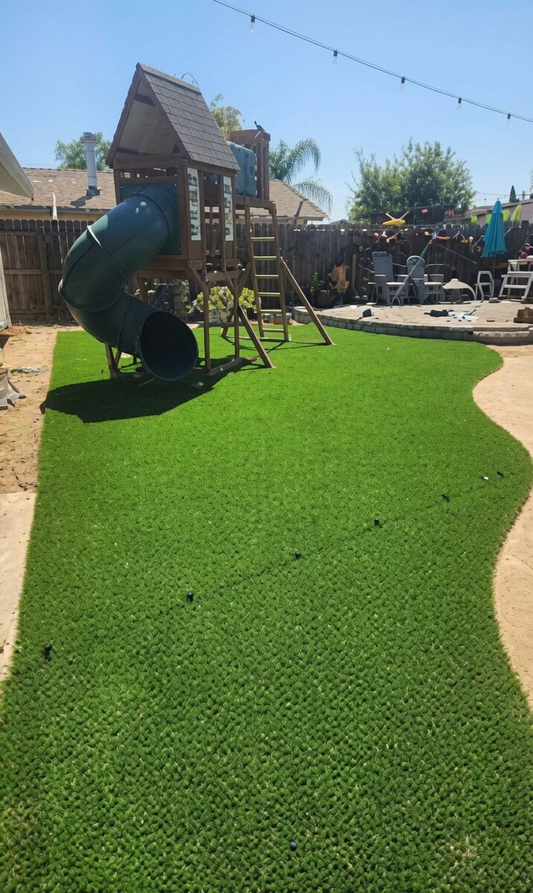
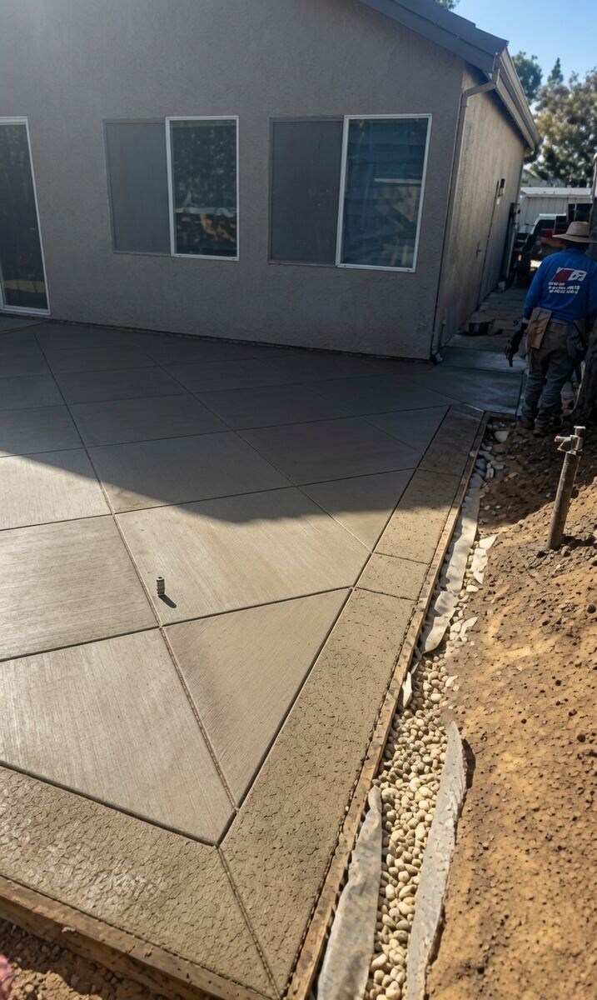
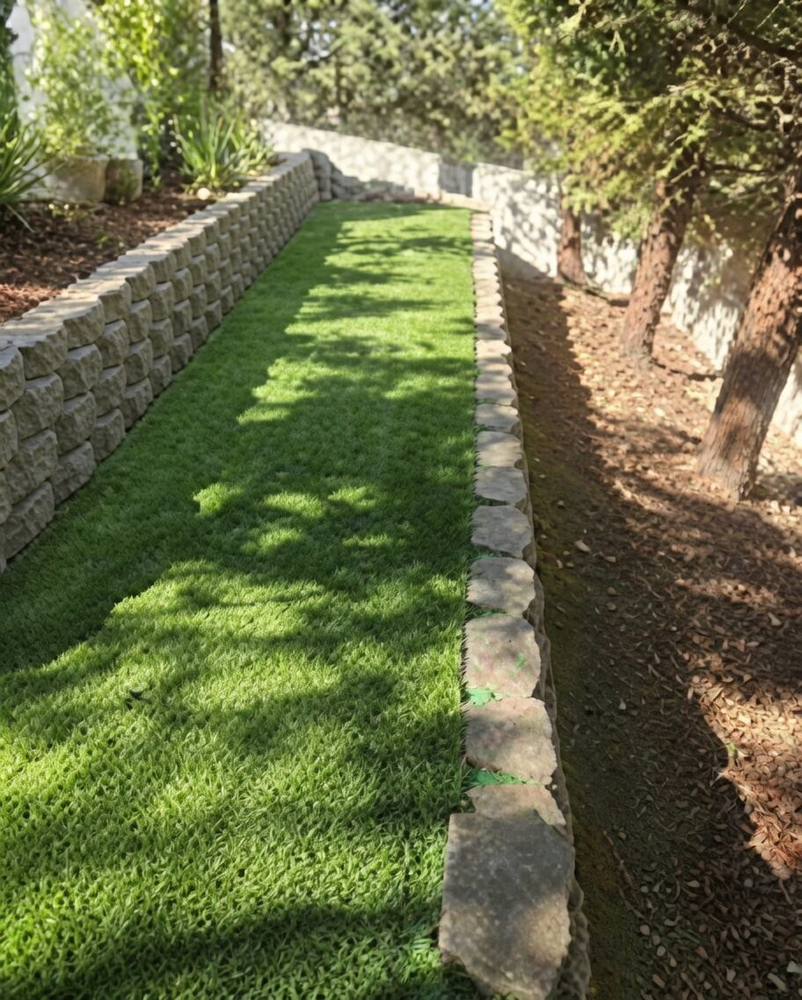

Most of our work is in Elk Grove. If you just closed on a new build and the backyard is still bare dirt, that is exactly the job we do best: grade it, pour the concrete, lay the turf, and hand you a finished yard — one crew, one quote, one schedule.
Green Landscaping is a CSLB-licensed C-27 landscaping contractor (Lic. #1059991), operating since 2008 and run by Jose and his crew. We don't do maintenance or mow-and-blow. We build yards.
Laguna, Laguna West, Laguna Ridge, East Franklin, Sheldon, Stonelake, Lakeside, Camden, Wilton Road corridor and the newer subdivisions south of Grant Line Road. HOA submittal packets are no problem — we have done plenty of them.



Text a photo of your yard to (916) 849-4844 or fill out the form below. We come out, measure, and give you one exact number for the whole job — no line-item haggling, no surprise add-ons. We are not the cheapest crew in Elk Grove; we are the one your neighbors ask about.
"Awesome company. They did my backyard — concrete, artificial turf, rock, and a drip system. Very happy with the result."
Artificial turf installation and concrete work (patios, walkways and slabs) for homes in Elk Grove. Pavers, retaining walls and sod are done as part of larger turf or concrete projects. We do not offer lawn maintenance or mowing.
Most new-build backyards (turf plus a patio or walkway) are finished in about 3 to 7 working days depending on size, concrete cure time and weather. We give you a schedule with the quote.
No. On-site estimates are free. You get one exact number for the whole job, not a list of line items that changes later. Text a photo of your yard to (916) 849-4844 to start.
Yes. Many of the newer communities in Elk Grove have HOA design rules and a submittal process. We have done plenty of them and will prepare what the HOA needs.
Yes. Green Landscaping of Sacramento is a CSLB-licensed C-27 Landscaping Contractor, license #1059991, operating since 2008. You can verify the license at cslb.ca.gov.
Elk Grove, Rancho Cordova, Sacramento, Folsom and the surrounding area, as far north as Lincoln. Our core work is in Elk Grove and Rancho Cordova new-build neighborhoods.
Cheap turf jobs skip the base. We grade and compact the native soil, add a compacted crushed-rock layer, infill sand and a drainage backing before the turf goes down, so it never shifts, wrinkles or puddles.
Fill this out and we'll get back to you fast — or text a photo of your yard to (916) 849-4844.